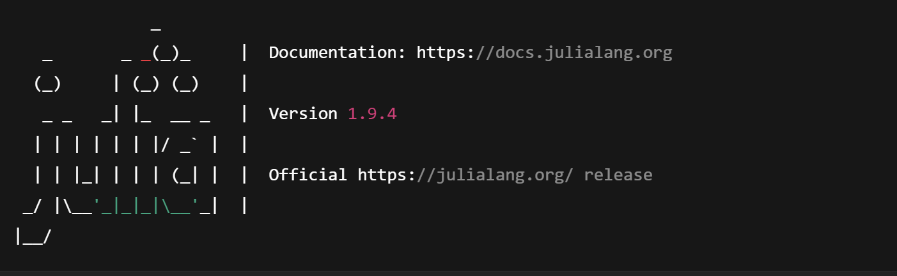

Getting Started with DynareJulia
This section will walk you through installing Julia — the foundational language for running DynareJulia.
Step 1: Download Julia
DynareJulia currently requires Julia version 1.9.4 for compatibility and performance reasons.
🛠️ You must install version 1.9.4, not the latest version.
To download it:
👉 Visit the Julia Old Releases Page
Then scroll down to find: Version 1.9.4 (released on 2023-12-21)
Select the appropriate installer based on your operating system:
💻 For Windows
- Click on:
julia-1.9.4-win64.exe(orjulia-1.9.4-win32.exeif using 32-bit) - Run the installer
- Accept default settings (you can check “Add Julia to PATH” if available)
🍎 For macOS
- Click on:
julia-1.9.4-mac64.dmg - Open the
.dmgfile and drag Julia into yourApplicationsfolder
🐧 For Linux
- Download the
julia-1.9.4-linux-x86_64.tar.gz - Extract it using your terminal
Step 2: Testing

Step 3: Install Visual Studio Code (VS Code)
Visual Studio Code (VS Code) is a lightweight and powerful code editor.
We recommend it for writing and managing Julia code, editing .mod model files, and building this documentation.
📥 Download VS Code
- Go to the official VS Code download page
- Choose your operating system:
- Windows: Click on the
.exeinstaller - macOS: Choose the
.zipor.dmgversion - Linux: Download the
.debor.rpmfile
💻 Install Instructions by OS
💻 Windows
- Run the downloaded
.exefile - During setup:
- ✅ Enable “Add to PATH”
- ✅ Enable “Open with Code” in the right-click context menu
- Complete the installation by clicking Next through the installer
🍎 macOS
- Open the downloaded
.dmgfile - Drag the Visual Studio Code icon into your
Applicationsfolder - Open VS Code from the Applications menu or using Spotlight (
Cmd + Space, then type "Code")
Step 4: Install the Julia Extension in VS Code
To enable full Julia support in VS Code — including syntax highlighting, interactive REPL, inline plots, variable browser, and more — you need to install the official Julia extension.
4.1 How to Install the Julia Extension
- Open Visual Studio Code
- Click on the Extensions icon in the left sidebar (or press
Ctrl+Shift+X) -
In the search bar at the top, type: Julia
-
Look for the extension published by Julia Language — it should appear first in the list
-
Name: Julia
-
Publisher: Julia Language
-
Click the Install button
4.2 First-Time Setup
After installing the extension:
- Open a Julia file, or click
View → Command Palette(Ctrl+Shift+P) - Type: Execute Active File
- VS Code will prompt you to select the Julia executable path
(if it doesn't auto-detect it) -
Browse to the path where Julia 1.9.4 is installed:
-
On Windows (default):
C:\Users\<YourUsername>\AppData\Local\Programs\Julia-1.9.4\bin\julia.exe
- On macOS:
/Applications/Julia-1.9.app/Contents/Resources/julia/bin/julia
- On Linux (if installed via tarball):
/opt/julia-1.9.4/bin/julia
- Select the correct path → the extension will configure automatically
✅ Verify Julia REPL Integration
To check if it's working:
- Create a new file and save it as
test.jl - Add:
println("Hello from Julia in VS Code!")